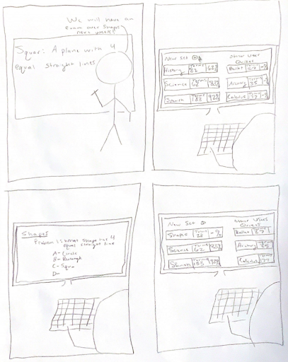
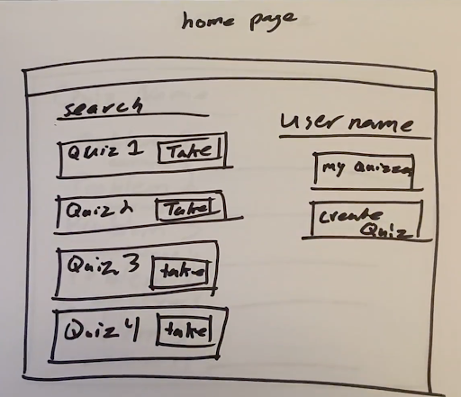
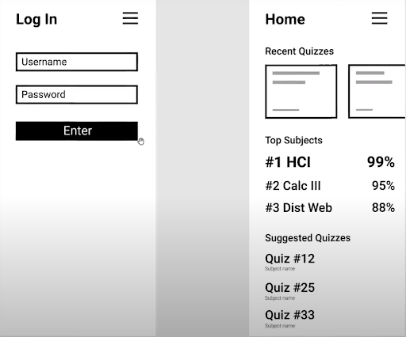

Our Process
-
1. Story Boarding
Creating the initial storyboard, we knew we wanted to have a series of quizzes made from other users and the ability to create quizzes easily. The storyboard was just a very broad example of why some students would have a reason as to why they would use our quiz app. For example, a quiz / exam would be coming up and rather than creating flash cards or just rewriting notes they would create quizzes or take quizzes from other students of the subject / class they need to study.
 -
2. Prototyping
Paper Prototype
To get a better understanding of the different elements we needed for the web application, we sought out to design a cheap and easy prototype. This led us to designing a paper prototype. The prototype gave us some good insights into how the user would be using our website. If a new user was coming to our page to take a specific quiz that they heard about from another student or professor we would need a way for them to easily locate that quiz. This led to the addition of a search function that would allow the user to filter through all the quizzes to find a specific one. Our paper prototype also led us to realize that the user would enjoy using our application better if they could see their progress on quizzes over time. To implement this we sought out to add a results page to our web application that would allow the user to see how they have improved on quizzes they have taken multiple times.
Digital Prototype
The digital prototype was created using the paper prototype as the backbone. The digital prototype was a means to truly visualize what we wanted users to see upon using our application. When first opening the application users will be greeted by the login screen, where after entering their username and password are taken to the home page. The home page then displays information specific to the person that has logged in. The home page displays the quizzes that the user has taken recently, their top subject, and will suggest quizzes to them. We wanted to show users where they excel and areas where they could use work; and also suggest to them quizzes that could help them improve. We decided that the homepage would be the most efficient place to display their stats.
 -
3. Functional Prototype
When setting out to design a user interface we wanted to keep usability and simplicity in mind. This led us to use some of the most cutting edge javascript libraries available. The two libraries that work as stepping stones for our web application are React and materialUI. Read more about them below.